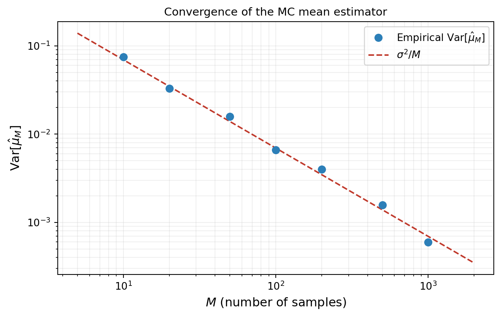
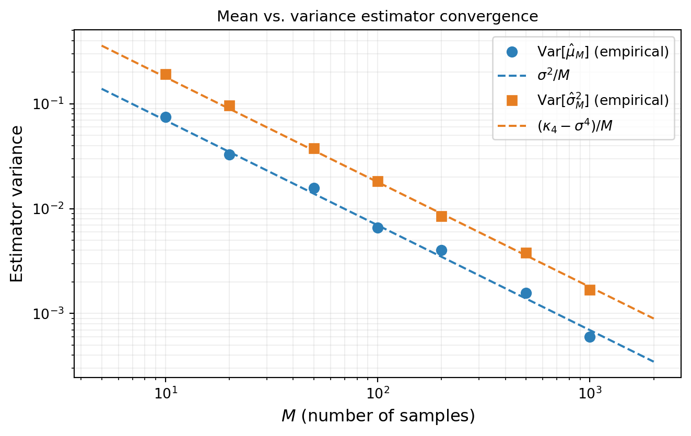
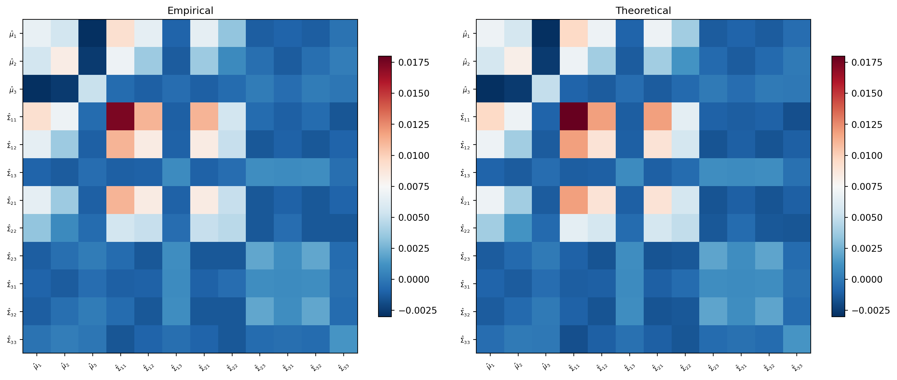
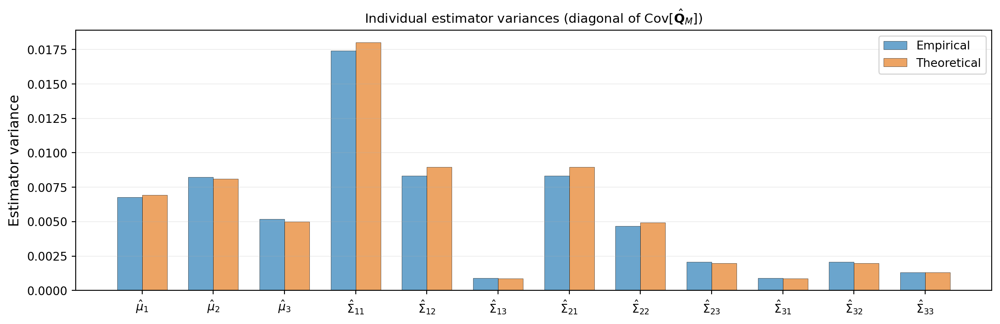

Estimator Accuracy and Mean Squared Error
PyApprox Tutorial Library
Bias, variance, and MSE of Monte Carlo estimators for scalar and vector-valued statistics.
TipDownload Notebook
Learning Objectives
After completing this tutorial, you will be able to:
- Define the bias, variance, and mean squared error (MSE) of an estimator
- State the MSE of the Monte Carlo mean and variance estimators and explain their \(1/M\) convergence
- Write the estimator covariance matrix for simultaneous estimation of mean and covariance of a vector-valued QoI
- Identify the role of higher-order moments (\(\mathbf{W}\), \(\mathbf{B}\) matrices) in controlling estimator accuracy
Prerequisites
Complete Monte Carlo Sampling before this tutorial.
Formalizing What We Observed
The previous tutorial made three empirical observations:
- Monte Carlo estimates are random — different samples give different answers.
- More samples produce more precise estimates.
- Some statistics (variance, covariance) are harder to estimate than others (mean).
This tutorial provides the mathematical framework that explains all three observations and makes them quantitative.
Bias, Variance, and MSE of a Scalar Estimator
Let \(s\) be a true quantity we want to compute (e.g., the mean of the QoI), and let \(\hat{s}_M\) be an estimator of \(s\) based on \(M\) samples. Because the samples are random, \(\hat{s}_M\) is itself a random variable. We measure its quality with three quantities.
Bias — systematic error:
\[ \text{Bias}[\hat{s}_M] = \mathbb{E}[\hat{s}_M] - s \]
An estimator with \(\text{Bias} = 0\) is called unbiased: on average, it hits the true value.
Variance — random spread:
\[ \text{Var}[\hat{s}_M] = \mathbb{E}\!\left[(\hat{s}_M - \mathbb{E}[\hat{s}_M])^2\right] \]
This is the width of the histogram we saw in the previous tutorial.
Mean Squared Error — total error:
\[ \text{MSE}[\hat{s}_M] = \mathbb{E}\!\left[(\hat{s}_M - s)^2\right] = \text{Bias}[\hat{s}_M]^2 + \text{Var}[\hat{s}_M] \]
For an unbiased estimator, \(\text{MSE} = \text{Var}\).
MSE of the Mean Estimator
The Monte Carlo estimator of the mean of a scalar QoI \(q = f(\boldsymbol{\theta})\) is:
\[ \hat{\mu}_M = \frac{1}{M}\sum_{i=1}^M q^{(i)} \]
This estimator is unbiased: \(\mathbb{E}[\hat{\mu}_M] = \mu\). Its variance is:
\[ \text{Var}[\hat{\mu}_M] = \frac{\sigma^2}{M} \tag{1}\]
where \(\sigma^2 = \text{Var}[q]\) is the true variance of the QoI. Therefore \(\text{MSE}[\hat{\mu}_M] = \sigma^2 / M\).
This is the fundamental convergence rate of Monte Carlo: the error decreases as \(1/M\). To halve the standard error, we need \(4\times\) the samples.
TipSimplified model for comparison
This tutorial uses a lightweight analytical model with \(K = 3\) QoIs so that (i) the true moments are available to high accuracy via quadrature, enabling precise comparison between empirical and theoretical estimator covariances, and (ii) the MC experiments run fast enough to use large repetition counts. The same theory applies to any model, including expensive PDE solvers.
The model maps a single uniform input \(x \sim U[0,1]\) to three QoIs:
\[ \mathbf{q}(x) = \begin{bmatrix} \sqrt{11}\, x^5 \\[4pt] x^4 + \cos(2.2\pi x) \\[4pt] \sin(2\pi x) \end{bmatrix} \]
Figure 1 verifies this empirically. At each sample size \(M\), we run 500 independent MC experiments and compute the empirical variance of the resulting mean estimates. The points follow the theoretical \(\sigma^2/M\) line.
MSE of the Variance Estimator
The MC estimator of the variance is:
\[ \hat{\sigma}^2_M = \frac{1}{M-1}\sum_{i=1}^M (q^{(i)} - \hat{\mu}_M)^2 \]
This estimator is also unbiased (the \(M-1\) denominator ensures this). Its variance is:
\[ \text{Var}[\hat{\sigma}^2_M] = \frac{1}{M}\left(\kappa_4 - \frac{M-3}{M-1}\sigma^4\right) \tag{2}\]
where \(\kappa_4 = \mathbb{E}[(q - \mu)^4]\) is the fourth central moment (related to kurtosis) of the QoI. For large \(M\) this simplifies to:
\[ \text{Var}[\hat{\sigma}^2_M] \approx \frac{\kappa_4 - \sigma^4}{M} \]
The key observation: the variance estimator also converges at rate \(1/M\), but the constant \(\kappa_4 - \sigma^4\) is typically much larger than \(\sigma^2\). This is why the variance histogram was wider than the mean histogram in the previous tutorial.
Figure 2 confirms this: both estimators converge at rate \(1/M\) on the log-log plot (parallel lines), but the variance estimator curve sits higher.

Vector-Valued Statistics
Our model returns \(K = 3\) QoIs: \(\mathbf{q} = (q_1, q_2, q_3)^\top\). We want to simultaneously estimate the mean vector and the covariance matrix:
\[ (\hat{\boldsymbol{\mu}}_M)_k = \frac{1}{M}\sum_{i=1}^M q_k^{(i)}, \qquad k = 1, \ldots, K \]
\[ (\hat{\boldsymbol{\Sigma}}_M)_{jk} = \frac{1}{M-1}\sum_{i=1}^M \left(q_j^{(i)} - (\hat{\boldsymbol{\mu}}_M)_j\right)\left(q_k^{(i)} - (\hat{\boldsymbol{\mu}}_M)_k\right), \qquad j, k = 1, \ldots, K \]
We can stack these into a single vector-valued statistic:
\[ \hat{\mathbf{Q}}_M = \begin{bmatrix} \hat{\boldsymbol{\mu}}_M \\ \text{flat}(\hat{\boldsymbol{\Sigma}}_M) \end{bmatrix} \in \mathbb{R}^{K + K^2} \]
where \(\text{flat}(\mathbf{X})\) vectorizes a matrix row by row.
Because \(\hat{\mathbf{Q}}_M\) is a random vector, its accuracy is characterized not by a scalar variance but by an estimator covariance matrix:
\[ \text{Cov}[\hat{\mathbf{Q}}_M] = \mathbb{E}\!\left[(\hat{\mathbf{Q}}_M - \mathbb{E}[\hat{\mathbf{Q}}_M])(\hat{\mathbf{Q}}_M - \mathbb{E}[\hat{\mathbf{Q}}_M])^\top\right] \in \mathbb{R}^{(K+K^2) \times (K+K^2)} \]
This matrix has block structure:
\[ \text{Cov}[\hat{\mathbf{Q}}_M] = \begin{bmatrix} \text{Cov}[\hat{\boldsymbol{\mu}}_M, \hat{\boldsymbol{\mu}}_M] & \text{Cov}[\hat{\boldsymbol{\mu}}_M, \hat{\boldsymbol{\Sigma}}_M] \\ \text{Cov}[\hat{\boldsymbol{\Sigma}}_M, \hat{\boldsymbol{\mu}}_M] & \text{Cov}[\hat{\boldsymbol{\Sigma}}_M, \hat{\boldsymbol{\Sigma}}_M] \end{bmatrix} \]
The following subsections give the form of each block.
Mean–Mean Block
The covariance between estimates of the mean vector is:
\[ \text{Cov}[\hat{\boldsymbol{\mu}}_M, \hat{\boldsymbol{\mu}}_M] = \frac{1}{M}\boldsymbol{\Sigma} \quad \in \mathbb{R}^{K \times K} \tag{3}\]
This is the multivariate generalization of Equation 1: the estimator covariance is proportional to the QoI covariance, scaled by \(1/M\).
Variance–Variance Block
The covariance between estimates of the covariance matrix entries is:
\[ \text{Cov}[\hat{\boldsymbol{\Sigma}}_M, \hat{\boldsymbol{\Sigma}}_M] = \frac{1}{M(M-1)}\mathbf{V} + \frac{1}{M}\mathbf{W} \quad \in \mathbb{R}^{K^2 \times K^2} \tag{4}\]
where
\[ \mathbf{V} = \boldsymbol{\Sigma}^{\otimes 2} + (\mathbf{1}_K^\top \otimes \boldsymbol{\Sigma} \otimes \mathbf{1}_K) \circ (\mathbf{1}_K \otimes \boldsymbol{\Sigma} \otimes \mathbf{1}_K^\top) \quad \in \mathbb{R}^{K^2 \times K^2} \]
\[ \mathbf{W} = \text{Cov}\!\left[(\mathbf{q} - \boldsymbol{\mu})^{\otimes 2},\; (\mathbf{q} - \boldsymbol{\mu})^{\otimes 2}\right] \quad \in \mathbb{R}^{K^2 \times K^2} \]
Here we use the notation:
- \(\mathbf{X} \otimes \mathbf{Y} = \text{flat}(\mathbf{X}\mathbf{Y}^\top)\) is the flattened outer product
- \(\mathbf{X}^{\otimes 2} = \mathbf{X} \otimes \mathbf{X}\)
- \(\mathbf{X} \circ \mathbf{Y}\) is the element-wise (Hadamard) product
The \(\mathbf{V}\) term involves only the QoI covariance \(\boldsymbol{\Sigma}\) and vanishes relative to \(\mathbf{W}\) as \(M\) grows. The \(\mathbf{W}\) term involves fourth-order centered moments of the QoI — the multivariate generalization of \(\kappa_4\) from the scalar case. This is what makes variance estimation fundamentally harder than mean estimation: it depends on the tail behavior of the QoI distribution.
Mean–Variance Cross Block
The covariance between the mean and variance estimators is:
\[ \text{Cov}[\hat{\boldsymbol{\mu}}_M, \hat{\boldsymbol{\Sigma}}_M] = \frac{1}{M}\mathbf{B} \quad \in \mathbb{R}^{K \times K^2} \tag{5}\]
where
\[ \mathbf{B} = \text{Cov}\!\left[\mathbf{q},\; (\mathbf{q} - \boldsymbol{\mu})^{\otimes 2}\right] \quad \in \mathbb{R}^{K \times K^2} \]
This block involves third-order centered moments of the QoI. It is zero when the QoI distribution is symmetric (since odd central moments vanish), but nonzero for skewed distributions. Our model’s nonlinear QoIs produce a skewed output distribution, so we expect \(\mathbf{B} \neq 0\).
NoteSummary of moment requirements
Each block of the estimator covariance depends on progressively higher-order moments of the QoI:
| Block | Estimator pair | Moment order required |
|---|---|---|
| \(\text{Cov}[\hat{\boldsymbol{\mu}}, \hat{\boldsymbol{\mu}}]\) | mean–mean | 2nd (covariance \(\boldsymbol{\Sigma}\)) |
| \(\text{Cov}[\hat{\boldsymbol{\mu}}, \hat{\boldsymbol{\Sigma}}]\) | mean–variance | 3rd (skewness-like, \(\mathbf{B}\)) |
| \(\text{Cov}[\hat{\boldsymbol{\Sigma}}, \hat{\boldsymbol{\Sigma}}]\) | variance–variance | 4th (kurtosis-like, \(\mathbf{W}\)) |
Empirical Verification
Figure 3 verifies the block structure empirically. We run 500 independent MC experiments with \(M = 100\) samples each, compute \(\hat{\mathbf{Q}}_M\) for each, and estimate the covariance of the resulting 500 estimates. The left panel shows this empirical estimator covariance; the right panel shows the theoretical prediction from the formulas above.

Figure 4 extracts the diagonal entries — the individual estimator variances — and shows them as a bar chart. The variance-of-covariance entries are substantially larger than the variance-of-mean entries, confirming the pattern we observed in the previous tutorial.

Scalar MSE for Vector-Valued Statistics
When the estimator is a vector, we need a scalar measure of total error. Two standard choices reduce the estimator covariance matrix to a single number:
Trace (sum of diagonal variances):
\[ \text{MSE}_{\text{tr}} = \text{tr}\!\left(\text{Cov}[\hat{\mathbf{Q}}_M]\right) = \sum_{i=1}^{S} \text{Var}[\hat{Q}_{M,i}] \]
This treats each component independently and sums their variances. It is the total variance across all statistics.
Determinant (volume of the uncertainty ellipsoid):
\[ \text{MSE}_{\text{det}} = \det\!\left(\text{Cov}[\hat{\mathbf{Q}}_M]\right) \]
This captures the joint uncertainty, including correlations between estimator errors. A large off-diagonal entry in the estimator covariance (e.g., the mean–variance cross block \(\mathbf{B}\)) inflates the determinant even if the individual variances are modest.
Both measures decay as \(O(1/M^S)\) for \(S\) statistics, but the constants differ depending on the higher-order moments \(\mathbf{W}\) and \(\mathbf{B}\).
The \(1/M\) Bottleneck
Every estimator variance in this tutorial has the form:
\[ \text{Var}[\hat{s}_M] = \frac{C}{M} \]
where \(C\) is a constant that depends on the statistic being estimated and the moments of the QoI. The rate \(1/M\) is universal:
- It is dimension-independent: the same rate holds whether \(\boldsymbol{\theta}\) has 2 parameters or 200.
- It is slow: reducing the standard error by a factor of 10 requires \(100\times\) more model evaluations.
When each evaluation is an expensive simulation (e.g., a FEM solve), this becomes the central computational bottleneck of UQ. The subsequent tutorials introduce methods that break this bottleneck: surrogate models that replace \(f\) with a cheap approximation, and multi-fidelity methods that combine cheap and expensive models to reduce the constant \(C\).
NoteA practical catch
The MSE formulas above assume we know the true moments — \(\boldsymbol{\Sigma}\) for the mean estimator, \(\mathbf{W}\) and \(\mathbf{B}\) for the variance and cross terms. In practice, these must themselves be estimated from samples, introducing a bootstrapping problem. A subsequent tutorial addresses how to estimate the sample budget needed for a target accuracy using pilot samples.
Key Takeaways
- The MSE of an estimator decomposes as \(\text{Bias}^2 + \text{Variance}\); for unbiased MC estimators, \(\text{MSE} = \text{Variance}\)
- The MC mean estimator has variance \(\sigma^2/M\); the MC variance estimator has variance \((\kappa_4 - \sigma^4)/M\) — same rate, larger constant
- For vector-valued statistics (mean + covariance of \(K\) QoIs), the estimator error is a covariance matrix with block structure involving \(\boldsymbol{\Sigma}\) (2nd moments), \(\mathbf{B}\) (3rd moments), and \(\mathbf{W}\) (4th moments)
- The trace or determinant of the estimator covariance reduces the matrix to a scalar MSE
- All MC estimators converge at rate \(1/M\), independent of parameter dimension — but the constants grow with the order of the statistic
Exercises
Use the empirical data from Figure 1 to estimate the slope of the log-log convergence plot. Verify that it is \(-1\) (corresponding to the \(1/M\) rate).
In the scalar case, show algebraically that \(\text{Var}[\hat{\sigma}^2_M] \to (\kappa_4 - \sigma^4)/M\) as \(M \to \infty\) starting from Equation 2.
For the model’s three QoIs, examine \(\text{Cov}[\hat{\mu}_1, \hat{\mu}_3]\) from the empirical estimator covariance matrix. Is it positive or negative? What does its sign imply about the off-diagonal of \(\boldsymbol{\Sigma}\)?
(Challenge) If the QoI distribution is symmetric (zero skewness), what happens to the \(\mathbf{B}\) matrix? What does this imply about the correlation between the mean and variance estimators? Verify empirically using a model with a symmetric output distribution.
Next Steps
Continue with:
- Monte Carlo Budget Estimation — Estimating how many samples you need in practice
- Multi-Fidelity Methods — Combining models of different cost and accuracy
References
[DWBG2024] T. Dixon et al. Covariance Expressions for Multi-Fidelity Sampling with Multi-Output, Multi-Statistic Estimators: Application to Approximate Control Variates. SIAM/ASA Journal on Uncertainty Quantification, 12(3):1005–1049, 2024. DOI
[QPOVW2018] E. Qian et al. Multifidelity Monte Carlo Estimation of Variance and Sensitivity Indices. SIAM/ASA Journal on Uncertainty Quantification, 6(2):683–706, 2018. DOI